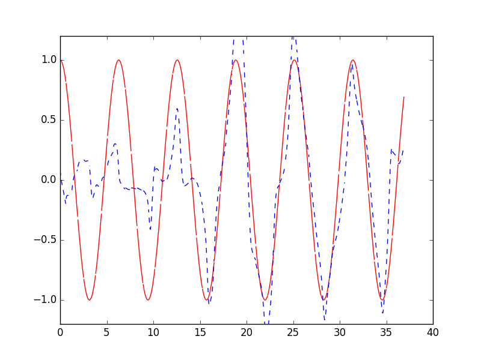

RNN LSTM (回归例子可视化)
作者: 莫烦 编辑: 莫烦
学习资料:
- 相关代码
- 为 TF 2017 打造的新版可视化教学代码
- 机器学习-简介系列 什么是RNN
- 机器学习-简介系列 什么是LSTM RNN
接着上一节的例子继续讲解. 这次, 我们会要可视化整个学习的结果.
matplotlib 可视化
使用 Matplotlib 模块来进行可视化过程, 在建立好 model 以后, 设置 plt.ion() 使 plt.show()可以连续显示.
model = LSTMRNN(TIME_STEPS, INPUT_SIZE, OUTPUT_SIZE, CELL_SIZE, BATCH_SIZE)
sess = tf.Session()
# sess.run(tf.initialize_all_variables()) # tf 马上就要废弃这种写法
# 替换成下面的写法:
sess.run(tf.global_variables_initializer())
plt.ion() # 设置连续 plot
plt.show()
然后在 sess.run() 后面加上plt.draw()的步骤.
_, cost, state, pred = sess.run(
[model.train_op, model.cost, model.cell_final_state, model.pred],
feed_dict=feed_dict)
# plotting
plt.plot(xs[0, :], res[0].flatten(), 'r', xs[0, :], pred.flatten()[:TIME_STEPS], 'b--')
plt.ylim((-1.2, 1.2))
plt.draw()
plt.pause(0.3) # 每 0.3 s 刷新一次
最后的结果显示为:

如果你觉得这篇文章或视频对你的学习很有帮助, 请你也分享它, 让它能再次帮助到更多的需要学习的人. 莫烦没有正式的经济来源, 如果你也想支持 莫烦Python 并看到更好的教学内容, 赞助他一点点, 作为鼓励他继续开源的动力.